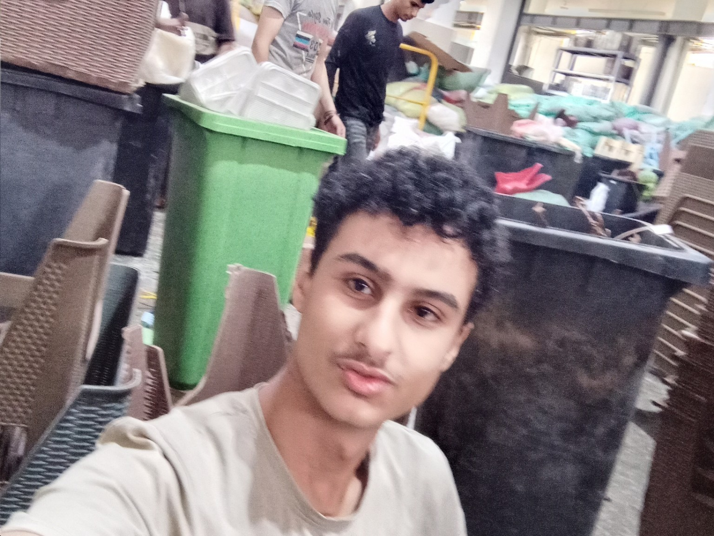
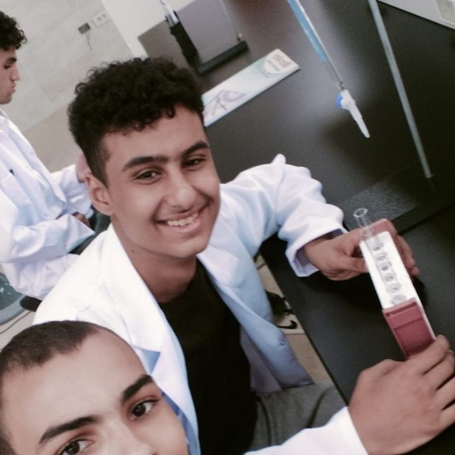
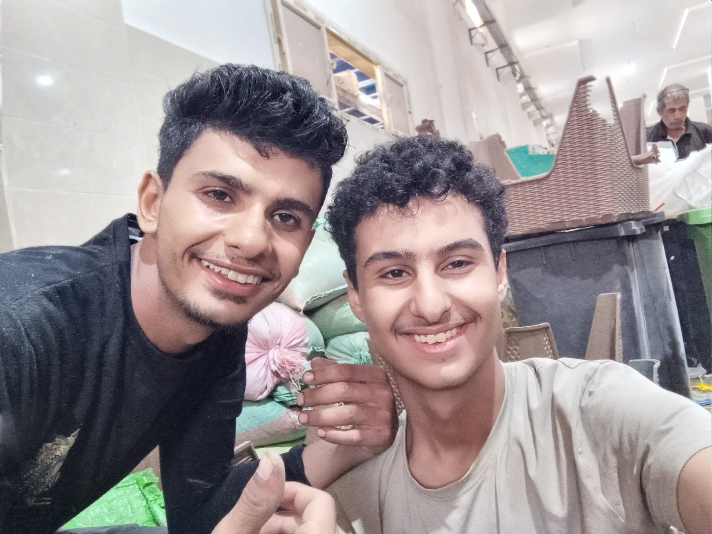

بدأ كل شيء بسؤال
لم أبدأ بكاميرا ولا بخطة. بدأت بسؤال صغير لم أجد له جواباً مقنعاً، ثم بسؤال آخر. كنت أقرأ وأبحث وأحكي لمن حولي ما اكتشفته، حتى لاحظت أنهم ينتظرون الحكاية القادمة أكثر مما توقعت.
صانع محتوى وثائقي مرح على يوتيوب تحت اسم هوسكرايب. أعمل بمنهج احترافي، وأبقى قريباً منكم كصديق يروي ما اكتشفه للتو.

ثلاث محطات صنعت هوسكرايب كما تعرفونه اليوم.
لم أبدأ بكاميرا ولا بخطة. بدأت بسؤال صغير لم أجد له جواباً مقنعاً، ثم بسؤال آخر. كنت أقرأ وأبحث وأحكي لمن حولي ما اكتشفته، حتى لاحظت أنهم ينتظرون الحكاية القادمة أكثر مما توقعت.

قررت ألا أكتفي بالحكي من خلف المكتب. أردتكم أن تروا المكان بأعينكم، فحملت الكاميرا وبدأت أخوض المغامرات بنفسي. بعضها نجح من أول مرة، وبعضها علّمني أكثر مما علّمني النجاح.

اليوم لا أصنع الحلقة وحدي. تعليقاتكم واقتراحاتكم تختار المواضيع، وأسئلتكم تصحّح مسارنا. هذا القرب هو ما أحميه أكثر من أي شيء، لأنه سبب وجود القناة.
أسلوب مرح، ومعايير جادة.
كل معلومة تُقارن بأكثر من مصدر قبل أن تصل إلى الشاشة.
أتحدث بلغة بسيطة، وأقرأ ما تكتبونه وأعتبره جزءاً من العمل.
أحترم وقتكم وثقتكم، ولهذا أختار بعناية ما أقدمه لكم.
للتعاون والإعلانات، أو لمجرد أن تقول لي رأيك في آخر حلقة. أقرأ كل رسالة.